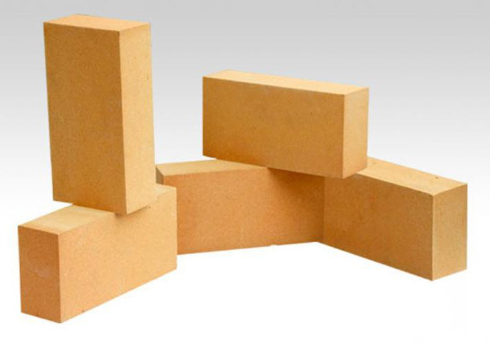

+99891 905 88 11
+99891 905 88 11
Ish vaqti: 9:00 dan 18:00 gacha
HUSH KELIBSIZ
«
S
u
r
x
o
n
K
e
r
a
m
i
k
s
»

Кирпич огнеупорный алюмосиликатный марки ШКУ-32 №9
★★★★★
6000000.00 So'm
.jpg)
Кирпич огниеупорный шамотный ША №9
★★★★★
3500000.00 So'm

Кирпич огнеупорный для футеровки вращающихся печей ШЦУ №5
★★★★★
7000000.00 So'm
Кирпич огнеупорный для футеровки вращающихся печей ШЦУ №4
★★★★★
7000000.00 So'm
Кирпич огнеупорный для футеровки вращающихся печей ШЦУ №3
★★★★★
7000000.00 So'm
Кирпич огнеупорный для футеровки вращающихся печей ШЦУ №2
★★★★★
3500000.00 So'm
Кирпич огнеупорный для футеровки вращающихся печей ШЦУ №1
★★★★★
3500000.00 So'm

Кирпич огнеупорный шамотный К/У № 5
★★★★★
7000000.00 So'm

Кирпич огнеупорный шамотный ШБ-9
★★★★★
2800000.00 So'm

Кирпич огнеупорный шамотный клин торцовый ШБ-29
★★★★★
2800000.00 So'm

Кирпич огнеупорный шамотный клин ребровый ШБ №44
★★★★★
2800000.00 So'm

Кирпич огнеупорный шамотный клин ребровый ША №45, 230Х114Х65/55 ГОСТ 8691-73, ГОСТ 390-60
★★★★★
3520000.00 So'm